Rio de Janeiro
Período de 28/12/2013 a 02/01/2014
Principais atrações:
- Igreja Candelária
- Centro Cultural do Banco do Brasil
- Casa França-Brasil
- Arcos dos Teles
- CCR Barcas e Baia Guanabara
- MAC de Niterói e Ilha da Boa Viagem
- MetrôRio
- Parque Penhasco Dois Irmãos
- Praia do Leblon
- Lagoa Rodrigo de Freitas
- Mirante da Paz
- Praia Vermelha
- Trem do Corcovado e Cristo Redentor
- Botafogo Praia Shopping
- Parque Lage
- Jardim Botânico
- Pista Cláudio Coutinho
- Bondinho de Pão de Açúcar
- Praia de Ipanema
- Praia de Copacabana e réveillon
- Teleférico do Complexo do Alemão
- Centro Luiz Gonzaga de Tradição Nordestina - Feira de São Cristóvão
Primeiro Dia (28/12/2013)
O que fizemos:
Foi primeira viagem que eu organizei independente, organizei uns 3 meses antecedente. Então, reservei aluguel um apartament através do site Aluguel Temporada, renomeou atual VRBO, hospedei com 3 amigas, no período de réveillon. Então, depois disso, reservamos uma passagem de ônibus interestaduais no guichê do Terminal Rodoviário Tietê. No dia chegada no terminal, saimos de ônibus por volta da meia noite, operadora pela empresa Expresso Brasileiro, chegamos na Rodoviária Novo Rio, por volta às 8:00 de manhã. Pegamos ônibus executivo, mais popular, chama-se Frescão, descemos na Praia de Botafogo, onde nós hospedamos.
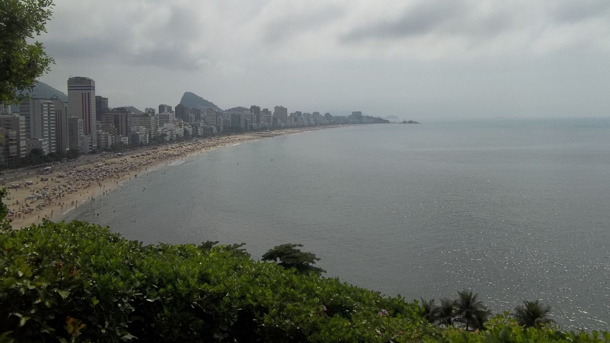
{kind=link}
Então, a anfitriã entregou a chave, então, deixamos as bagagens de roupas e trocamos as roupas. Logo após, fomos ao estação do metrô Flamengo, operadora da empresa MetroRio, descemos a estação Uruguaiana, localiza-se no Centro da cidade. Atravessamos enquanto contemplamos pela Avenida Presidente Vargas, bem logo, observamos a Igreja Candelária, fica final da Avenida Presidente Vargas. Fomos dentro da igreja e contemplamos os detalhes construtivos.
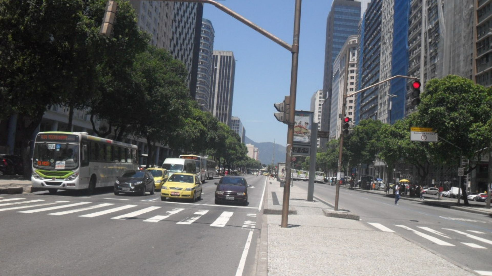
{kind=link}
{kind=link}
Bem pertinho da Igreja, então, andamos para o Centro Cultural do Banco do Brasil, onde havia exposição temporário de "Obsessão Infinita" da japonesa Yayoi Kusama. Então saimos de CCBB, indo para Casa França-Brasil, teve exposição de estrutura madeira, ficamos poucos minutos, então, sai de lá, atravessando pelo Arco dos Teles, conhecendo o centro da cidade. Bem logo ali, já estamos na estação CCR Barcas de Praça XV do centro da cidade do Rio de Janeiro.
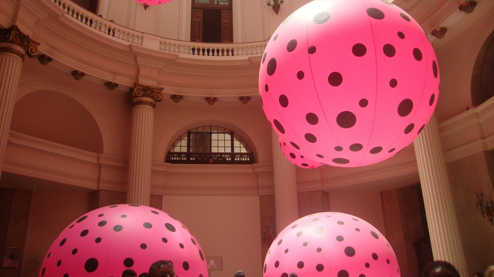{kind=link}
{kind=link}
{kind=link}
{kind=link}
Pegamos o barco, atravessando pela Baía Guanabara, indo direção para Praça da Arabibóia do centro da cidade de Niterói, indo para caixa postal nesta cidade, referência é Museu de Arte Contemporâneo, é a forma de disco voador que segura o pilar do centro entre térreo a superior. Peguei ônibus municipal de Niterói, a linha 47-B, referente Moovit, percurso após 7 pontos depois, então desci o ponto de ônibus fica bem pertinho de museu.
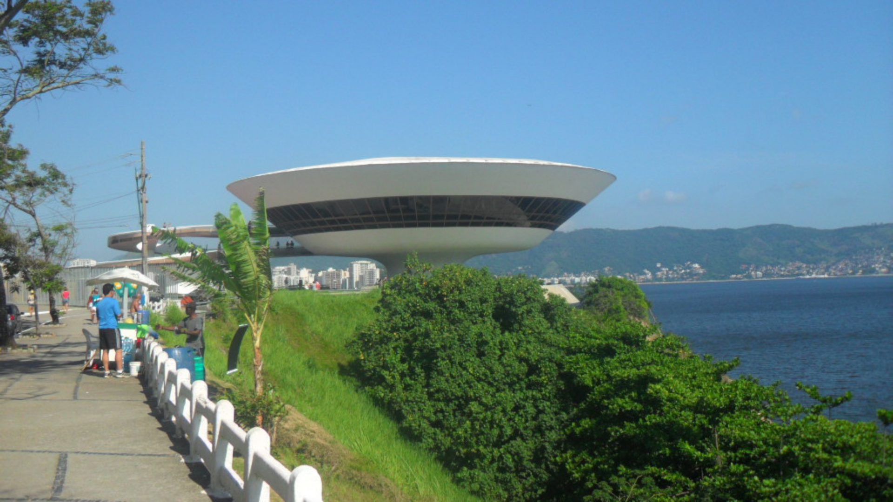{kind=link}
{kind=link}
Após de exploração e contemplação do museu, então, sai de lá, indo para Ilha da Boa Viagem, atravessei pela passarela sob praia de Boa Viagem, nesta ilha contém uma igrejinha, fica no alto, infelizmente, estava fechado. Pegamos ônibus mesma linha que eu citei anterior, indo para estação CCR Barcas Praça da Arabiboia, indo para direção a Praça XV do centro do Rio de Janeiro, atravessando pela baía Guanabara, apreciando pôr do sol vista para o Centro da cidade do Rio de Janeiro.
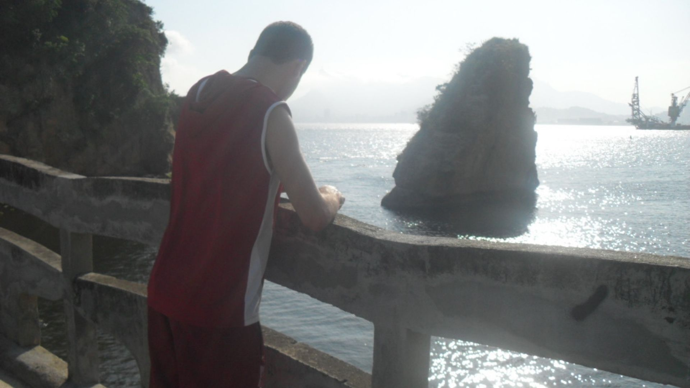{kind=link}
{kind=link}
Chegamos ao terminal de CCR Barcas Praça XV, então, passando pelo centro, observando os edíficios de Paço Imperial e Assembleia Legislativa do Estado do Rio de Janeiro, sigla de ALERJ, então, segui para pegar o metrô indo a direção para Praia de Copacabana, assim, descemos a estação Siqueira Campos, depois ir à praia noturno para contemplação neste local.
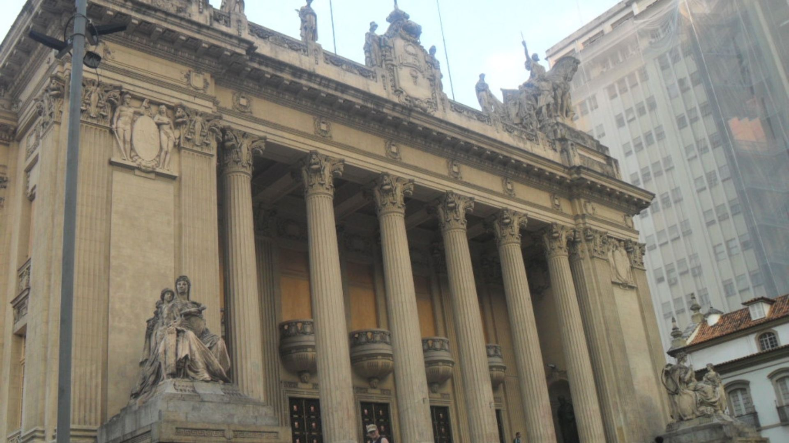{kind=link}
{kind=link}
{kind=link}
Encerramos passeios, voltamos para apartamento, descansamos e dormimos.
Segundo dia (29/12/2013)
O que eu fiz:
Acordamos bem cedo, pegamos metrô de Flamengo, descemos a estação General Osório, pegamos Metrô na Superficie, é o interligação de metrô e ônibus pela operadora da empresa MetrôRio, que vai para Alto do Leblon, antes de ir lá, conhecendo pouco Feira do Hippie, fica na Praça General Osório em Ipanema, depois segui para Parque Penhasco Dois Irmãos. Caminhamos pela meio da floresta subindo até o topo que dá pra ver as praias principais da Zona Sul da cidade do Rio de Janeiro, referente praias Leblon, Ipanema e Arpoador. Então, descemos no morro Dois Irmãos, bem logo, fomos para o Mirante do Leblon, apreciando a paisagem urbana e natureza, no local há um quiosque para vender água de coco e lanches. Então, segui para a Praia do Leblon, mergulhamos no mar.
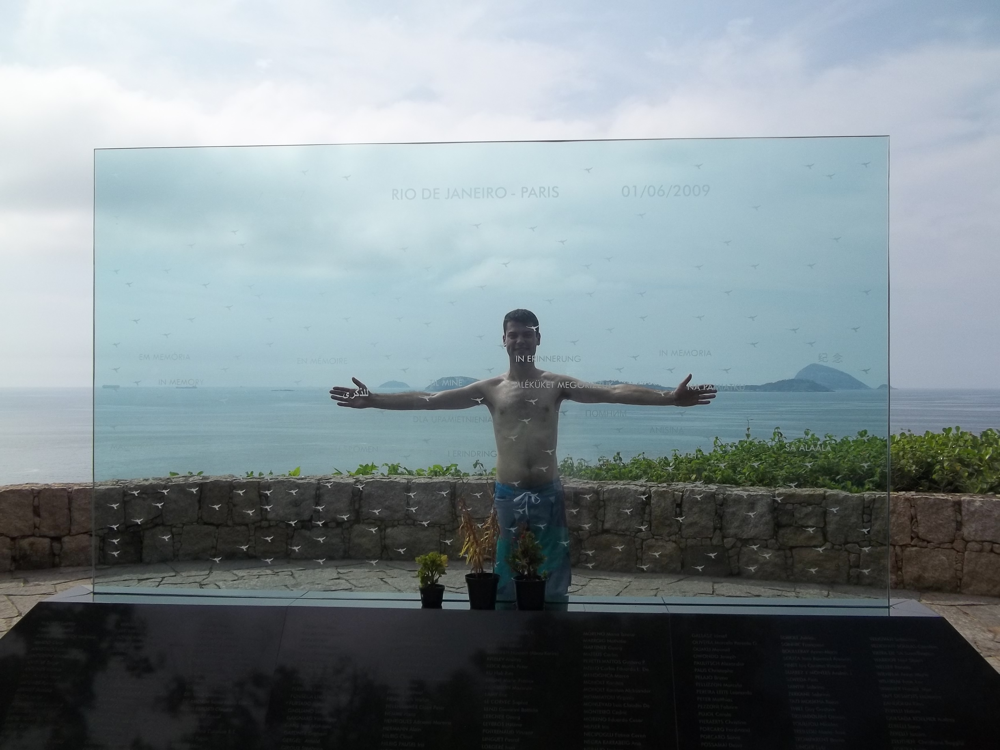{kind=link}
{kind=link}
{kind=link}
Eu aproveitei conhecer pouco os arredores da Zona Sul do Rio de Janeiro, andando até Lagoa Rodrigo de Freitas. Depois, voltei para praia para encontrar com os amigos, indo para Mirante da Paz, que nós entramos na estaçao General Osório, e subimos no elevador que vai até o topo para acesso para a comunidade do Pavão e Pavãozinho, então, subimos a escada até topo, vista o bairro de Ipanema, Morro Dois Irmãos e mar. Atualmente, não recomendo ir lá, porque está muito vazio, sentindo abandonado, pois na minha epóca, tinha muita gente subindo..
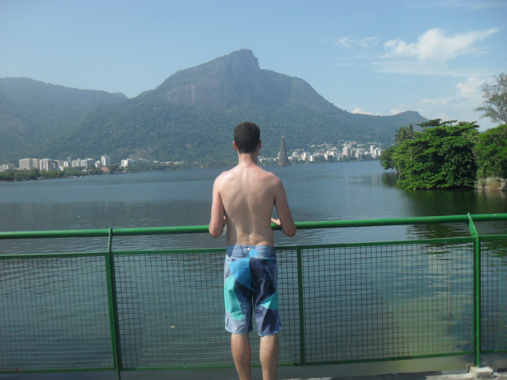{kind=link}
{kind=link}
{kind=link}
Então, tinha pouco tempo ir para bondinho de Pão de Açúcar, nós descemos de Mirante da Paz para a estação do metrô General Osório, pegamos metro de lá, para Botafogo, corremos para pegar a bilhetaria, infelizmente, encerrou o horário, então, tiramos as fotos na Praia Vermelha enaquanto observando os bondinhos passando.
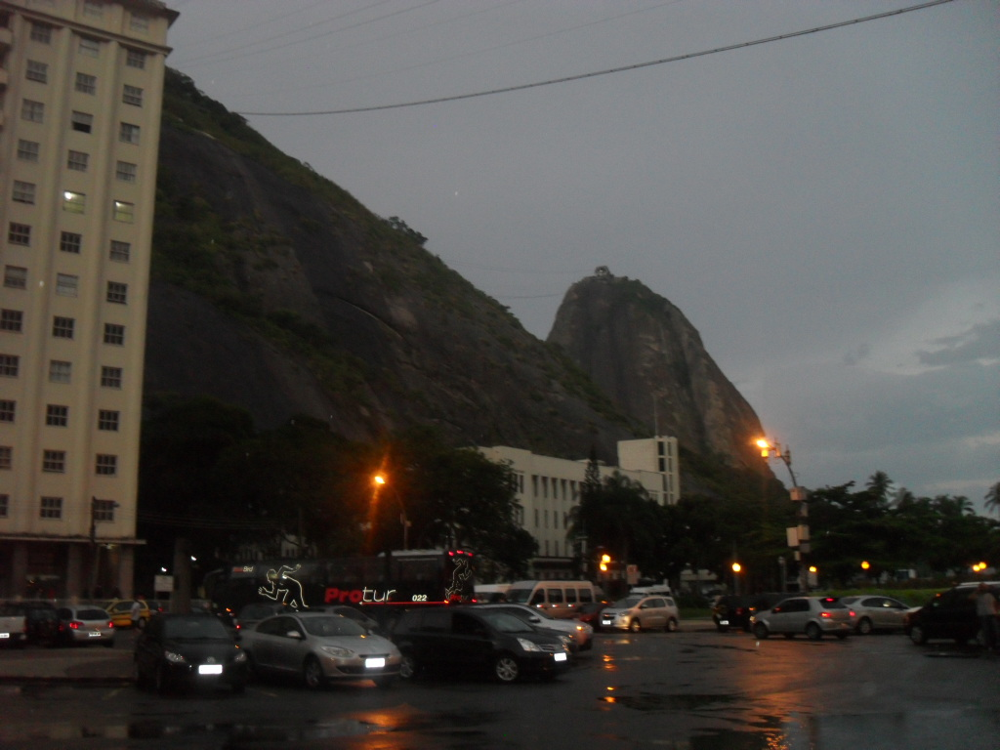{kind=link}
Então, deixamos Praia Vermelha, pegamos ônibus indo para Botafogo Praia Shopping para jantar, depois indo para apartamento e descansamos.
Terceiro dia (30/12/2013)
Acordamos bem cedo, pegamos metrô Flamengo, indo para Largo do Machado, pegamos ônibus municipal, indo para Cosme Velho, para saltar o Trem Corcovado. Aguardamos o trem chegar, já pegamos, e subi o morro do Corcovado, há várias paisagens muitos lindas.
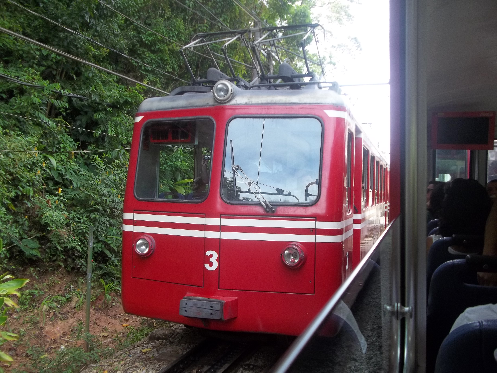{kind=link}
{kind=link}
{kind=link}
{kind=link}
Na volta, pegamos de trem descendo até a estação Cosme Velho, pegamos ônibus indo para Largo do Machado, pegamos metrô indo para Botafogo, e subimos ao shopping Botafogo Praia Shopping, almoçamos lá, depois tiramos as fotos de Vista panoramica, ao mesmo shopping. Depois, pegamos Metrô na Superficie, é um ônibus da operadora MetrôRio, indo para Parque Lage, a entrada é gratiuta, depois fomos ao Jardim Botânico.
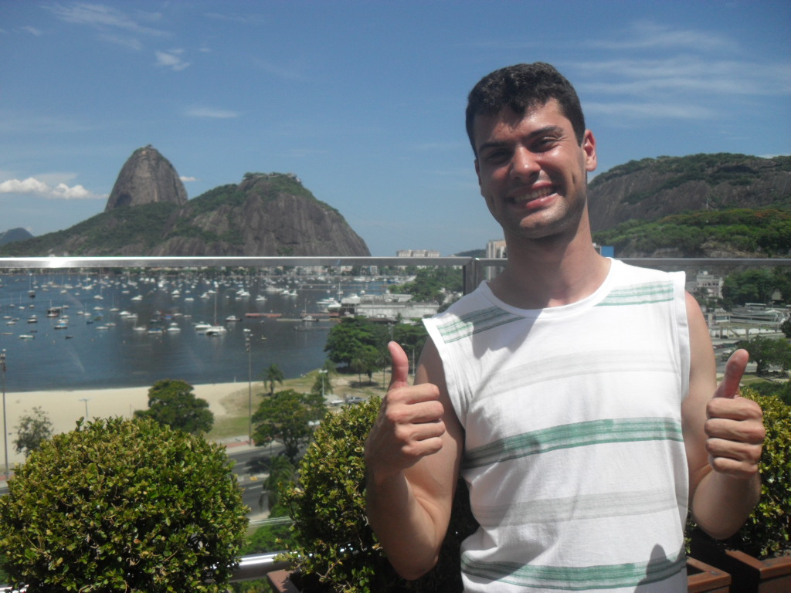{kind=link}
{kind=link}
{kind=link}
Então, na volta, pegamos Metrô na Superfície, ônibus operadora por MetrôRio, descemos Botafogo, transferência para ônibus municipal que vai para Praia Vermelha, onde o bondinho de Pão de Açúcar parte. Então, descemos o ponto, indo para conhecer a Pista Cláudio Coutinho, onde há entrada ao lado direito para observan do o mar. Depois disso, compramos um bilhetaria com desconto, por ser deficientes, subimos no bondinho até a primeira parada, chama-se Morro da Urca, conhecendo o ambiente, depois, subimos novamente que vai até segunda parada chama-se Morro de Pão de Açúcar, é parte mais alta.
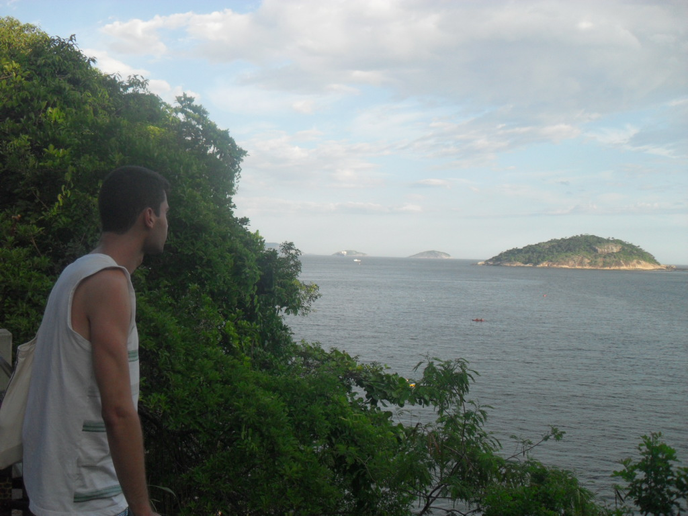{kind=link}
{kind=link}
{kind=link}
Descemos para Praia Vermelha, pegamos ônibus indo para apartamento e descansamos.
Quarto dia (31/12/2013)
Acordamos bem cedo, indo para praia de Ipanema, aproveitamos mergulho na pedra do Arpoador, onde não havia correnteza, é protegido pelas pedras. Depois disso, caminhamos para Copacabana, tentamos entrar Forte de Copacabana, infelizmente estava fechado devido véspera de Ano Novo, então, caminhamos pela praia de Copacabana, depois voltamos para apartamento para nos arrumar, sai de apartamento, voltando para Praia de Copacabana, bem cedo, oor volta das 19 horas da noite para garantir o local.
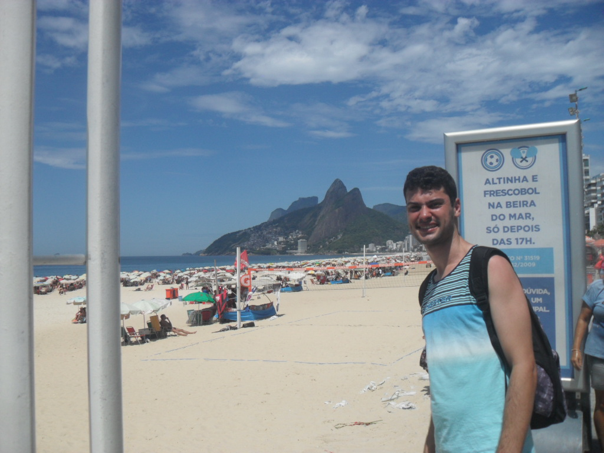{kind=link}
{kind=link}
{kind=link}
Ainda estamos acordado, aguardando para ver os fogos artificiais.
Quinto dia (01/01/2014)
Contagem regressiva diminuiu, e começou bombar, apareceu fogos artificiais, é muito lindo.
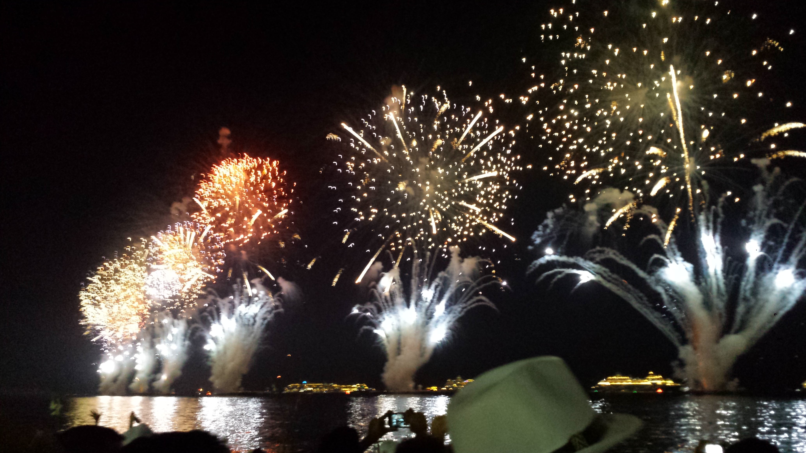{kind=link}
Pegamos metrô Cantagalo, descemos Flamengo, voltamos para apartamento por volta às 3:00 de manhã. Então, acordei bem cedo, minhas amigas não quiseram ir lá, então, fui sozinho indo para o Complexo do Alemão, peguei o metrô Flamengo, desci a estação Central, transferência para o trem, operadora pela SuperVia, peguei o ramal Saracuruna, indo para Bonsucesso, subi para o Teleférico do Alemão, fui até o terminal de Paineiras, observando no local, depois voltei para o trem, indo para Central do Brasil, peguei o metrô indo para Cantagalo.
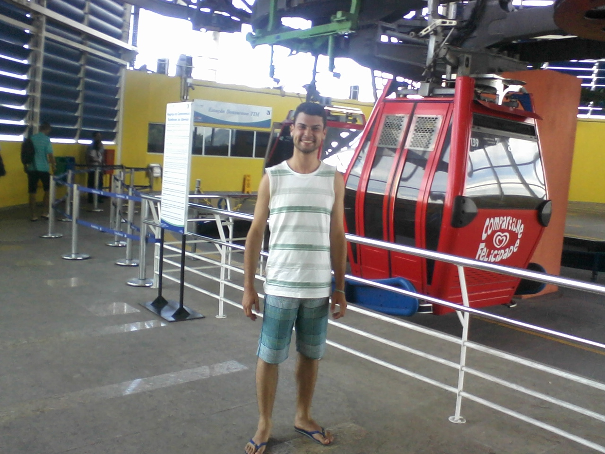{kind=link}
{kind=link}
{kind=link}

Na Lagoa, aproveitamos apreciando na paisagem urbana e natureza, observando na lagoa, onde há pedalinhos, aprovetamos usar esse, ficou 30 minutos, observando pôr do sol na Lagoa, depois deixamos na lagoa, fomos a praia de Ipanema para aproveitar apreciar no por do sol.


Depois disso, voltamos para apartamento e descansamos.
Sexto dia (02/01/2014)
Acordamos bem cedo, último dia estar na cidade do Rio de Janeiro, pegamos metrô Flamengo, descemos a estação Estácio, pegamos táxi, indo para Centro Luiz Gonzaga de Tradição Nordestina, mais popular Feira de São Cristóvão. Compramos muitas lembranças, o preço de lá deve ser muito bom.
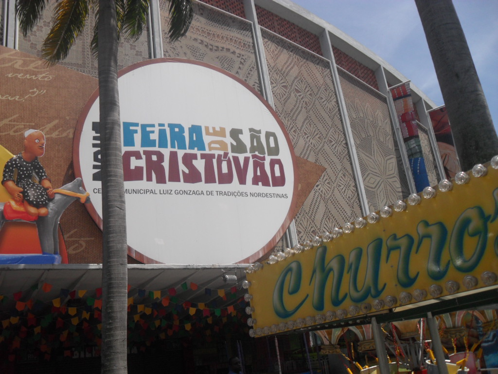{kind=link}
{kind=link}
Voltamos para apartamento, devolvemos chave para anfitriã, e despedimos lá, pegamos táxi indo para Terminal Rodoviário Novo Rio, por volta das 14hs. Chegamos no Terminal Rodoviário Tietê por volta das 22hs ao mesmo dia.
DERDIC-PUC/SP | Desenvolvimento Web
Daniel Dosadi © 2021